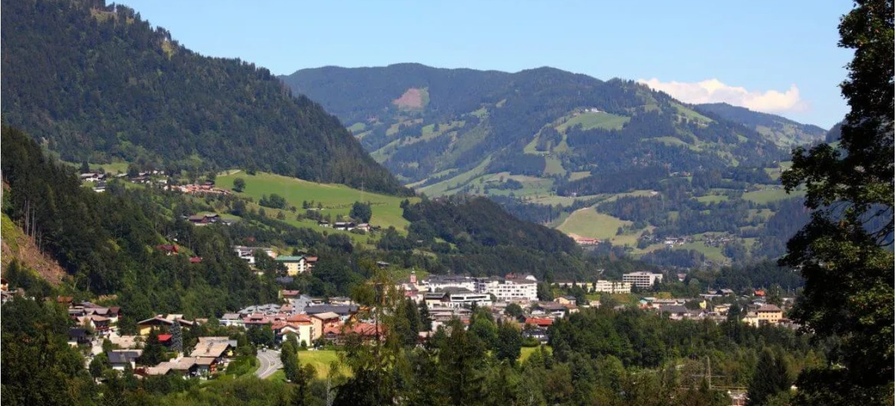

2. Schwarzbachwacht hágó
47.635602, 12.858392

A hágó 868 méter tengerszint feletti magasságban köti össze Ramsau bei Berchtesgaden települést a
Saalach folyó völgyével. Geológiailag a Berchtesgadeni-Alpok és a Reiter Alpe dolomittömbjei között
húzódó természetes választóvonal.
A hágóút (B305) a „Deutsche Alpenstraße” (Német Alpesi út) része, amelyet az 1930-as években kezdtek
kiépíteni stratégiai és turisztikai célokból.
A terület hidrogeológiai szempontból is jelentős: itt található a Schwarzbach-forrás, amely egy
karsztforrás, és vízhozama erősen függ a csapadékmennyiségtől.
A környék növénytana a mészkedvelő alpesi flórára jellemző, domináns fafaj a lucfenyő és a
vörösfenyő.
A hágó történelmileg fontos sószállítási útvonal volt a berchtesgadeni bányák és a bajor alföld
között.